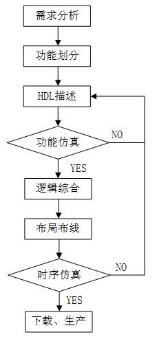

設計方法
Verilog の設計は、トップダウン設計方法（top-down）を多く採用しています。つまり、まずトップレベルモジュールの機能を定義し、次にトップレベルモジュールを構成するために必要なサブモジュールを分析します。その後、各モジュールをさらに分解・設計し、これ以上分解できない最下位の機能ブロックに到達するまで行います。これにより、大きなシステムを複数の小さなシステムに細分化でき、時間や工数の面でより多くの担当者に設計を割り当てることができるため、設計速度が向上し、開発期間を短縮できます。

設計フロー

Verilog の設計フローは、一般的に以下のステップを含みます：
要件分析
スタッフはユーザーが提示した機能要件を分析・理解し、回路システムの全体計画を立て、詳細な技術仕様をまとめ、初期方案を確定する必要があります。例えば、電子スクリーンを設計する場合、電源供給方式、動作周波数、製品サイズ、コスト、消費電力などを考慮する必要があり、回路実装には ASIC を採用するか、FPGA/CPLD デバイスを選択するかなども検討します。
機能分割
ユーザーの回路要件を正しく分析した後、論理機能の全体設計を行うことができます。回路全体の機能、インターフェース、全体構造を設計し、機能モジュールの分割と設計方針、各サブモジュールのインターフェースとタイミング（インターフェースタイミングと内部信号のタイミングを含む）などを考慮し、プロジェクトメンバーにサブモジュール設計タスクを合理的に割り当てます。
テキスト記述
任意のテキストエディタを使用することも、専用の HDL 編集環境を使用することもでき、必要なデジタル回路を設計モデリングして、以下として保存します。.vファイル。
機能シミュレーション（前シミュレーション）
モデリングファイルをコンパイルし、モデル回路に対して機能上のシミュレーション検証を行い、設計のエラーを発見して修正します。
この時のシミュレーション検証では、信号の遅延などのタイミング要素は考慮されておらず、論理的な正しさだけを検証します。
論理合成
合成（synthesize）とは、標準セルライブラリと特定の設計制約に基づいて、設計の高レベル記述（Verilog モデリング）をゲートレベルネットリストに変換するプロセスです。論理合成の目的は、物理回路のゲートレベル構造を生成し、論理・タイミング面である程度の最適化を行い、論理・面積・消費電力のバランスを追求し、回路のテスト容易性を高めることです。
ただし、すべての Verilog ステートメントが論理セルに合成できるわけではなく、例えば遅延ステートメントは合成できません。
配置配線
論理合成によって生成されたネットリストと制約ファイルに基づき、メーカーが提供する各種基本標準セルライブラリを利用して、ゲートレベル回路の配置配線を行います。これにより、Verilog で設計されたデジタル回路は、標準セルライブラリで構成されるデジタル回路として設計されました。
タイミングシミュレーション（後シミュレーション）
配置配線後、回路モデルには遅延情報が含まれています。配置配線で得られた正確なパラメータを利用して、シミュレーションソフトウェアで回路のタイミングを検証します。セルデバイスの違いや配置配線方案は回路のタイミングに影響を与え、深刻な場合はエラーが発生することがあります。エラー発生後は、RTL（レジスタ転送レベル記述、すなわち Verilog の初期記述）を修正し、後続のステップを繰り返す必要があるかもしれません。このプロセスは、エラーが完全に排除されるまで何度も繰り返される可能性があります。
FPGA/CPLD ダウンロードまたは ASIC 製造プロセス生産
上記のすべてのステップを完了した後、開発ツールを通じて設計したデジタル回路のターゲットファイルを FPGA/CPLD チップにダウンロードし、回路基板上でデバッグ・検証を行うことができます。
ASIC で実装する場合は、チップを製造する必要があります。一般的にチップ製造時にも、まず FPGA ボード上で論理機能の検証を行う必要があります。